Accomplissement de quête journalière
Bénédiction de Kandiaru
Carnage de mana
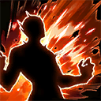
Chaînes ensanglantées
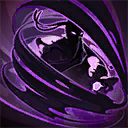
Camouflage
Catastrophe naturelle
Défense agressive
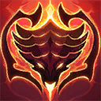
Écailles d'acier de Kasaka
Extraction de PV
Mission de la sanction
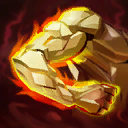
Solidification
Ténacité
Vie
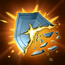
Attaque dévastatrice
Attaquer pour mieux défendre
Barrage initial
Chasseur de boss
Chasseur de démons
Désir
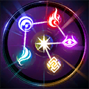
Détection de faiblesse
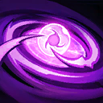
Domaine du monarque
Économie des forces
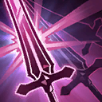
Épée à double tranchant
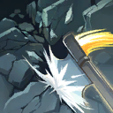
Force irrésistible
Frappe fatale
Frappe véloce
Hostilité
Instinct primaire
Intuition
Maîtrise de l'assassinat
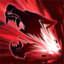
Massacreur de lycans
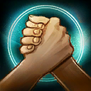
Nous ne faisons qu'un
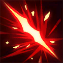
Perception affûtée
Pulvérisation
Ré-éveil
Récupération rapide
Bouclier d'énergie de mana
Sans retour
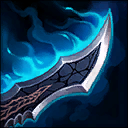
Technique avancée de la dague
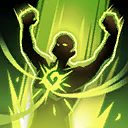
Vaillant dans l'adversité
Rapidité
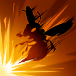
Vitesse de l'éclair
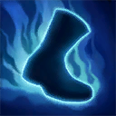
Vitesse
Acrobate
Garde double
Jugement ultime
La vie en marche
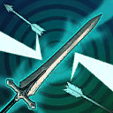
Résonance d'arme
Ricochet
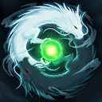
Soutien mutuel
Surcharge de puissance
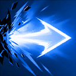